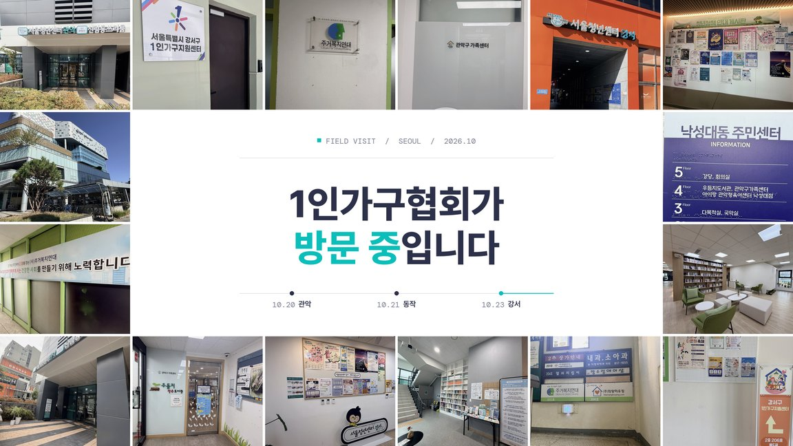

|
|
|
제19호 · 2026.10.29(목)
혼자 사는 삶을 위한
한 주의 정책·생활 소식
현장 방문 · 소개 영상 · 10월 세미나 · 1인가구 소식 7건
|
|
안녕하세요, 회원 여러분. 어느덧 10월의 마지막 주입니다. 이번 KSA WEEKLY 제19호에는 협회가 10월 한 달 동안 찾아간 1인가구 지원 현장과 새로 공개한 협회 소개 영상을 담았습니다. 용산 청년지음과 함께 연 10월 1인가구 세미나 소식과 지난주 1인가구 소식 일곱 건도 함께 전합니다. 부쩍 쌀쌀해진 날씨에 건강 잘 챙기시기 바랍니다.
|
|
협회 동향

10월, 서울 곳곳의 1인가구 지원 현장을 찾아갔습니다
KSA 1인가구협회는 1인가구지원센터와 서울청년센터, 공공기관, 주거·복지 단체 등 스무 곳 가까이를 직접 찾아갔습니다. 현장에서 1인가구 지원 사업 이야기를 들었고, 뜻이 맞는 기관과는 서로 소식을 알리며 1인가구에게 필요한 직간접 지원과 구체적인 협력 방안을 함께 논의했습니다. 꼭 필요한 지원이 여러 기관의 협력으로 1인가구 한 분 한 분께 고루 닿을 수 있도록 많은 관심 부탁드립니다.
KSA 1인가구협회 소개 영상을 공개했습니다
협회가 어떤 일을 하는지 2분 15초 영상에 담았습니다. 유튜브와 협회 홈페이지 첫 화면에서 보실 수 있습니다. 주변에 협회를 소개하실 때 함께 나눠 주시면 감사하겠습니다. 협회 유튜브 채널을 구독하시면 세미나 쇼츠 등 새 영상을 바로 받아 보실 수 있습니다.
10월 1인가구 세미나를 용산 청년지음과 함께 잘 마쳤습니다
KSA 1인가구협회는 10월 22일(목) 용산 청년지음 ‘지음콜라보’ 사업과 함께 〈내 통장은 왜 늘 비어 있을까〉 첫 회 「월급은 그대로인데」를 열었습니다. 유튜브 ‘오늘아 고마워’ 김도현 님과 함께 기분 따라 새는 소비를 돌아보는 자리였습니다. 함께해 주신 참가자분들과 공간을 내어 준 용산 청년지음에 감사드립니다. 이날 세미나는 짧은 영상(쇼츠)으로 엮어 협회 유튜브 채널에 올릴 예정입니다.
|
|
|
지난주 1인가구 소식 · 10/19~10/27
|
① 건강 나빠져도 노인복지주택 계속 거주 입법예고
보건복지부가 건강이 나빠져도 노인복지주택에 계속 살 수 있게 하는 개정안을 입법예고했고 11월 23일까지 의견을 받습니다
블로그에서 전문 보기 ›
|
② 이번 주 서울 1인가구 나들이와 생일상 프로그램
광진구1인가구지원센터 임진각 나들이(10월 22일 신청 마감)와 중구1인가구지원센터 첫돌 주간(10월 20~24일) 소식입니다
블로그에서 전문 보기 ›
|
③ 1인 세대 에너지바우처 겨울 사용법 4가지
에너지바우처 겨울 요금차감은 10월 1일 시작했고 아직 신청하지 않았다면 12월 31일까지 신청할 수 있습니다
블로그에서 전문 보기 ›
|
④ 서울역 앞 쪽방촌에 공공임대 1,000호 들어선다
동자동 쪽방촌이 공공주택지구로 지정돼 공공임대 1,000호를 포함한 2,150호가 2032년 입주를 목표로 들어섭니다
블로그에서 전문 보기 ›
|
⑤ 인구전략 기본계획 숫자 5개로 본 1인가구
인구전략위원회가 10월 14일 발표한 첫 5개년 계획안에 1인가구 정책 통합 플랫폼 구축이 담겼습니다(국무회의 의결 전 계획안)
정책브리핑 원문 보기 ›
|
⑥ 취약 어르신 65만 명 낙상 치료비 내년부터 지원
금융위원회와 보건복지부가 2027년 1분기부터 취약 어르신 약 65만 명에게 낙상 치료비와 치매배상보험을 지원합니다
정책브리핑 원문 보기 ›
|
⑦ 계룡시 중장년 1인가구 자산관리 교실 머니톡 모집
계룡시에 사는 40~69세 1인가구 15명을 선착순으로 받으며 11월 8일까지 계룡시가족센터 누리집에서 신청합니다
계룡시 가족센터 바로가기 ›
관련 기사 보기 ›
|
|
더 많은 1인가구 소식은 협회 홈페이지에서 보실 수 있습니다.
|
|
|
KSA 1인가구협회 (Korea Small Household Association)
홈페이지 ksaofficial.co.kr · T. 02-2635-9076 · 본 메일은 협회 회원님께 발송되는 주간 소식지입니다.
※ 게재 정보는 발행 시점 기준이며 실제 일정·혜택은 변경될 수 있습니다.
문의하기 · info.ksaofficial@gmail.com
더 이상 소식을 받고 싶지 않으시면 수신거부 하실 수 있습니다.
|